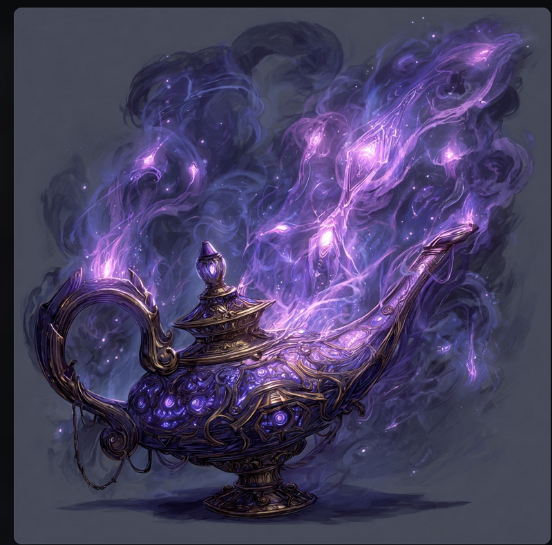

Cover
SESSION 3
THE RIVER OF BLOOD
Baldur's Gate: Descent into Avernus — Level 11, 3 Players — Target: 5-6 Hours
Session Arc
Tower of Urm departure → Avernus travel → Palace of Gore → Kill Bitter Breath → Free the Moonkite
Tone: Tense journey, building dread, personal stakes, brutal boss fight, emotional payoff.
What the Party Knows
- Fallen Three locations — from the real Mordenkainen (main quest)
- Drenwal's cure — must die and be reborn in the eyes of another god
- Moonkite location — Palace of Gore, follow the river of blood (Aurora's arc)
- Moonkite Cage Key — from Bloodbath's Meatgrinder wreckage
- Dumal is tracking them — somewhere in Avernus, Bhaalspawn proximity sense
TABLE OF CONTENTS
1 · Navigation
Navigation System
Avernus Navigation System
Avernus shifts. Landmarks move. Rivers reroute. The sky gives no sun. Navigation is a group skill challenge, not a single die roll.
Step 1: Assign Travel Roles
Each PC picks one role per travel segment. Each role matters.
| Role | Who | Check | Effect |
|---|
| Navigator |
Reads the map |
WIS (Survival), INT (Arcana), or INT (Investigation) |
Main check. Determines travel time + encounter quality. |
| Spotter |
Watches for landmarks |
DC 13 WIS (Perception) |
Success: Navigator gets +2. Fail: No bonus. |
| Scout |
Watches for threats |
DC 14 WIS (Perception) |
Success: 1 round warning before encounters. Fail by 5+: Party surprised. |
Step 2: Navigation Check
| Distance | DC | Examples |
|---|
| Near (8-12h) | 12 | Crypt of the Hellriders, Bone Brambles, Palace of Gore |
| Mid (12-20h) | 15 | Arkhan's Tower, Uldrak's Grave, Bel's Forge |
| Far (20+h) | 18 | Shummrath's Pit, Arches of Ulloch |
| Hidden | 22 | Bleeding Citadel (requires guide), Kostchtchie's Maw |
Bonuses
- +2 — Party has a map of the area
- +2 — Lulu recognizes the route (roll d6: 4+ she remembers; 1 = flashback, 30-min delay)
- +2 — Party has been to the destination before
- +5 — Gargauth guides them (cost: Gargauth influence +1)
Step 3: Navigation Results
| Result | Travel Time | Encounter Modifier |
|---|
| Beat DC by 5+ | -2 hours | -3 to encounter roll (safer) |
| Beat DC | Base time | +0 |
| Miss by 1-4 | +2 hours | +3 (harder encounters) |
| Miss by 5-9 | +4 hours | +5 + automatic hazard |
| Miss by 10+ / Nat 1 | +6 hours | +7 + hazard + unwanted attention |
DM Note — Gargauth's Guidance: If Drenwal asks the Shield for help, Gargauth knows Avernus intimately. Automatic +5 to navigation. But he'll steer them past "interesting" locations — places where deals can be made, souls can be tempted, and Drenwal's faith can be tested. Gargauth influence ticks up by 1 each time.
Reputation Tracker
As the party's deeds spread, Avernus reacts. Reputation adds to encounter rolls — more danger, but also more opportunity.
| Deed | Rep | Effect |
|---|
| Killed Bloodbath | +1 | Warlords know them by name |
| Freed the Moonkite | +2 | Celestial pulse detected across Avernus |
| Each Fallen Three dealt with | +1 | Zariel's network notices |
| Made a deal with Smiler | +1 | Word spreads among warlords |
| Used Soul Coin Overdrive visibly | +1 | Flashy — marks the ship |
Current Rep: +1 (Bloodbath killed). After Session 3: +3 (+ Moonkite freed).
At Rep 5+: Zariel's forces actively hunt the party. At Rep 7+: Zariel herself may take notice.
2 · Encounters
Exploration Encounters
Avernus Exploration Encounters
Roll d20 + Navigation Modifier + Reputation per travel segment. Higher = more dangerous.
| Roll | Type | Encounter |
|---|
| 1-2 |
Safe |
Dead Silence. Nothing. Describe the desolation. The party feels watched but isn't. Good RP moment — let them discuss plans, process revelations. |
| 3-4 |
Discovery |
Helpful Landmark. Ancient waystone, Hellrider trail marker, or recognizable terrain feature. +2 to the next navigation check. 50% chance: Potion of Superior Healing hidden in the rubble. |
| 5-6 |
Hazard |
Environmental Hazard. Roll d4: 1–Acid rain (DC 15 Con, 3d6 acid, corrodes war machine 2d10). 2–Fire geysers (DC 16 Dex, 4d6 fire). 3–Ash storm (DC 14 Con or blinded 1h). 4–Styx tributary crossing (DC 14 Con or lose 1 memory). |
| 7-8 |
Combat (Easy) |
Hell Hound Pack. 6-8 hell hounds (CR 3, 45 HP). Hunting something else. 50% ignore party. If engaged: pack tactics, surround isolated PCs. End in 2-3 rounds. |
| 9-10 |
Exploration |
Blood War Debris Field. Wrecked war machines, dead soldiers. DC 15 Investigation: 1d4 soul coins + spare parts. DC 18: hidden cache — roll on Road Treasure Table. |
| 11-12 |
Combat (Med) |
Warlord Scout Patrol. Roll d4: 1–Smiler scouts (3 hobgoblins on bikes, flee if losing). 2–Kovic merregons (4 merregons, demand toll: 2 soul coins or fight). 3–Rust Queen scavengers (2 meazels + rust monster). 4–Unknown warlord (3 barbed devils, territorial). |
| 13-14 |
Social/Moral |
Stranded Souls. 1d4 mortal souls trapped in Avernus. Unarmed, confused, terrified. Devils hunting them (arrive in 1d4 rounds). Help, ignore, or sell them. Helping costs time + possible combat; ignoring triggers Lulu's distress. |
| 15-16 |
Combat (Hard) |
Infernal Bounty Hunters. 1 bone devil (CR 9) + 2 barbed devils (CR 5) + 2 merregons. Want a specific soul coin, prisoner, or the party themselves. DC 17 Persuasion to negotiate. They know the party killed Bloodbath. |
| 17 |
Trade |
Wandering Emporium. Mahadi appears. Full shopping (see stock list) + rumors. Mahadi gossips for entertainment — knows about Bitter Breath, Smiler, and recent events. |
| 18 |
Personal |
Character Event. Pick the most relevant PC:
Drenwal: Bhaal vision — flash of Dumal closer, The Hunger triggers (DC 15 Wis or 1 exhaustion).
Aurora: Wand pulse — Moonkite echo reveals a hidden path or celestial cache.
Asimov: Soul Capacitor hums — Rasheem has intel on a nearby bounty target. |
| 19-20 |
Combat (Hard) |
Blood War Spillover. 2 vrocks + 4 dretches vs 1 ice devil + 3 lemures. DC 15 Stealth to avoid. 2d4 soul coins in the aftermath. If party intervenes, surviving side is grateful (or hostile). |
| 21-22 |
Deadly |
Zariel's Ice Devil Patrol. 1 ice devil (CR 14) + 4 spined devils. On orders, hunting "celestial energy" (post-Moonkite) or "the Bloodbath-killers." DC 18 Stealth to avoid. If engaged, reinforcements in 1d4 hours. |
| 23+ |
Spectacle |
Zariel Flyover. Burning figure in the sky. All infernal creatures flee. DC 18 Wis or frightened 1 min. No combat. If party has high reputation, she looks down. |
Avernus Landmark Sub-Table (d6)
Roll when a Discovery or Exploration result calls for a landmark.
| d6 | Landmark |
|---|
| 1 | Spawning Trees. Fiendish grove. DC 15 Nature: harvest 2d4 wild magic apples (see loot-and-items.md). |
| 2 | Demon Zapper. Trapped unicorn. Save it (DC 16 Arcana to disable, combat with 2 barbed devil guards) or leave it. |
| 3 | Collapsed War Machine. DC 15 Investigation: 1d6 soul coins, spare parts, or trapped survivor (50% trap). |
| 4 | Path of the Fallen. Ancient Hellrider trail, marked with faded holy symbols. +2 to next navigation. Drenwal feels a pang. |
| 5 | Bhaalspawn Sign. Burned campsite, melted Hellrider medals, fresh Bhaal symbol. DC 15 Survival: Dumal was here within 12h. |
| 6 | Sibriex Overhead. Floating aberration. DC 18 Con or Warp Creature. If approached: can trade information for "interesting" biological samples. |
3 · Session Flow
Acts 1-3: Departure → River → Palace
Pacing Guide
| Block | Time | Content |
|---|
| Act 1: Departure | 1h | Soul Capacitor upgrade, party discussion, Gargauth, Smiler encounter |
| Act 2: River of Blood | 45m | Following the river, landmarks, scouting the Palace |
| Act 3: Palace Infiltration | 1.5h | 3 entry options, Captain Grozz dilemma, minion fights |
| — Short Rest (10 min real time) — |
| Act 4: Boss Fight | 1.5h | Bitter Breath + minions + lair actions (cheat sheet) |
| Act 5: The Moonkite | 45-60m | Skill challenge, bow+wand fusion, mount persuasion, cliffhanger |
Act 1: Departure from the Tower (1 hour)

Opening
The real Mordenkainen watches from the balcony of the second Tower of Urm. He does not wave. The tower shimmers and shifts position, as if it was never there.
Rasheem's Reward — Soul Capacitor Upgrade
"Well, well, well. Look who's been busy. Bloodbath the Drinker of Gore. CR fifteen-and-change. Consumed, not killed — I have to say, that's style, Asimov. The syndicate appreciates style."
Mechanical: Medium Souls tier unlocked (CR 5-10). Psionic Surge (+2d8 psychic + 1 bonus SA die), Soul Shiv (reaction, 3d6 psychic + frightened), Memory Siphon, Soul Mask, Psionic Echo. Rasheem hints at future Major Soul contract.
Party Discussion (Let This Breathe)
Two revelations to process. Don't rush this.
- Drenwal's cure — "Die and be reborn in the eyes of another god." Let players theorize. Don't answer.
- Moonkite vs Fallen Three — Main quest (Fallen Three) vs personal quest (Moonkite). If they hesitate, Aurora's wand pulls south.
Gargauth Speaks (While Traveling)
"Die and be reborn? How poetic. How... convenient for whatever god catches you on the way down."
"Think carefully, Drenwal. When you die — and you will die — your soul will be untethered for a heartbeat. And in that heartbeat, every god and devil who's ever tasted your blood will reach for you."
If asked for help: "I could catch you. When you fall. But that's a conversation for later. First, survive today."
Travel Encounter: Smiler the Defiler
4 hours in. War machine parked across a canyon pass. Blood-painted grin on the side.
Smiler's Offer: Map to Palace of Gore with guard rotations + secret entrance (collapsed drainage tunnel, east side). Price: When Bitter Breath dies, Smiler gets the Palace and its forces.
DC 16 Insight: Genuine about wanting BB dead, but hiding that he knows the Moonkite's value.
- Accept: Advantage on scouting the Palace. Smiler drives off cackling.
- Refuse: No map, no secret entrance. Must scout themselves.
- Attack: Smiler has Counterspell. War machine speed 100 ft. Flees. Warns Bitter Breath.
Act 2: The River of Blood (45 min)
Literal tributary of gore. 20 ft wide, slow, thick as syrup. Touch: DC 14 Con or poisoned 1h. Fall in: 3d6 necrotic/round + 1 exhaustion on exit.
Landmarks (mark on the journey)
- 0:30 — Bone Dam. Bodies of Bloodbath's forces, killed by Bitter Breath during his takeover. DC 14 Investigation reveals the purge.
- 1:00 — Warning Totems. Severed heads on poles, still alive. Soul-bound sentinels that scream if passed without permission. DC 15 Religion: identify them. Solutions: Destroy quietly (AC 10, 15 HP, DC 14 Stealth per totem) OR Silence spell.
- 1:30 — War Camp. 20+ hobgoblins, 4 maw demons. NOT the target. DC 16 group Stealth to bypass. DC 15 Perception spots patrol gaps (advantage on Stealth).
Aurora's Wand Escalation
1h: faint pulse → 3h: steady heartbeat, warmth → 5h: VIBRATING, silver-blue light, faint agonized song. DC 12 Arcana: "The Moonkite is close. It's being drained."
Act 3: Palace Infiltration (1.5 hours)
Squat fortress built into a cliff. Blackite stone and fused bone. Gore is structural.
Three Entry Options
| Option | How | Risk |
|---|
| A: Stealth (drainage tunnel) | DC 15 Athletics to clear rubble (only if Smiler told them). DC 16 Stealth in blood-terrain. | If detected: BB arrives in 2 rounds with reinforcements. |
| B: Deception | DC 18 Deception (gate guards). DC 20 to fool BB himself (+2 if they mention Bloodbath). | BB is paranoid. Failure = immediate hostility. |
| C: Assault | Charge front gate. Fight through all levels. | Multiple fights, no rest between. Only if fully resourced. |
Palace Layout
- Lower Level (Drainage): Knee-deep blood (difficult terrain). 2 maw demons (CR 5, 137 HP). Bone spear traps (DC 15 Perception, DC 14 Dex, 3d8 piercing).
- Main Level (Throne Room): Where BB holds court. 6 hobgoblin veterans + 2 barbed devils + BB.
- Prison Level: Spiraling descent. Air gets colder and cleaner. 1 chain devil (CR 8, 85 HP) guards the Moonkite's cage.
Moral Dilemma: Captain Grozz
"Please — I don't want to die for this place. Bloodbath was cruel but predictable. His brother is... worse. He kills his own for sport."
Offer: Full intel on BB's position + guard counts + unlocks drainage gate. Price: Let him leave with 5 soldiers.
- DC 12 Insight: Genuinely terrified.
- Let him go: -6 hobgoblins from the boss fight. Future ally potential.
- Kill him: Quick. But Gargauth whispers: "See? Sometimes mercy is just weakness with a prettier name."
4 · Boss Fight
Bitter Breath — Fight Cheat Sheet
Bitter Breath — Fight Cheat Sheet
This is your at-the-table reference. Everything you need, nothing you don't.
Setup
| Creature | Count | HP | AC | Init | Role |
|---|
| Bitter Breath | 1 | 280 | 19 | +5 | Boss — mobile skirmisher, never stands still |
| Hobgoblin Phalanx | 4 (or 2)* | 55 ea | 18 | +1 | Shield wall, one initiative, group actions |
| Barbed Devil | 1 | 110 | 15 | +2 | Concentration sniper. One job: Hurl Flame. |
| Lair Actions | — | — | — | 20 | Pick one per round. Two options. |
*2 hobgoblins if party freed Captain Grozz.
Bitter Breath — Turn Template
Every single round, this is his turn:
- MOVE (50 ft). Always reposition. Never stay where he was.
- ACTION: Multiattack (3 Gutripper OR 2 Gutripper + 1 Gore) — OR Rotten Breath if recharged.
- BONUS: Skirmisher (Dash 50 more ft or Disengage). Get away from the party.
Gutripper: +13, 2d8+7 slash + 2d6 necrotic. On crit: +2d6 necrotic burst (no tracking).
Gore Horns: +13, 2d10+7 pierce + 2d8 necrotic. DC 17 Dex or BB moves through target + attacks again.
Rotten Breath: 40ft cone, DC 17 Con, 8d8 poison + 4d6 necrotic. Stun on fail by 5+. Recharge 5-6.
Aura of Rot: Start turn within 15 ft → DC 17 Con or poisoned + half speed until end of next turn.
Legendary Actions (3/round, after each PC turn)
| Action | Cost | Effect |
|---|
| Reposition | 1 | Move 25 ft, no OA. Use this after every PC turn. |
| Gutripper Strike | 1 | One Gutripper attack. +13, 2d8+7+2d6 necrotic. |
| Flaying Rush | 2 | Move full speed. DC 17 Dex 4d6 slash to each adjacent creature on the path. One Gutripper at end. |
Evasive Gore (Reaction): When hit, halve damage + move 15 ft (no OA). Use vs Asimov's big Sneak Attacks.
Phase Transitions
PHASE 1: 280-141 HP
Behavior: Opens with Rotten Breath on the cluster. Uses hobgoblin wall as cover. Skirmishes — darts in, attacks wounded PCs (Blood Frenzy advantage), darts out. Tactical, cold.
Dialogue: "My brother was loud. I am precise."
Legendaries: Reposition after every PC turn. Occasional Gutripper Strike.
PHASE 2: 140-1 HP
Behavior: Gets MORE aggressive. Flaying Rush every round. Charges through the party, slashing everyone. Drops tactical play — pure rage.
Dialogue: "My brother fell to you. MY BROTHER. I am NOT him. I am BETTER."
Legendaries: Flaying Rush (2 actions) + Gutripper Strike (1 action). Maximum damage output.
PHASE 3: RELENTLESS (0 HP → 1 HP)
Drops. Silence. Stands back up.
Dialogue: "...No."
One final turn: Rotten Breath if recharged, OR full Multiattack with reckless abandon. Then dies for real.
Lair Actions (Initiative 20 — pick one)
| Option | Effect |
|---|
| A: Gore Geyser | Blood erupts under one creature. DC 16 Dex or 3d8 necrotic + prone. 10-ft difficult terrain until next init 20. |
| B: Bone Cage | Bones erupt around one creature. DC 16 Str or restrained until end of next turn. Cage: AC 12, 25 HP. Allies can break it. |
Hobgoblin Phalanx (One Initiative)
They act as a unit. Move as a group. Shield wall blocks movement through them.
- Group Attack: +5, 1d8+3 slash + 1d6 per adjacent hobgoblin (Martial Advantage stacking).
- When one dies: Wall weakens. At 2 remaining: they break and flee.
- Job: Block Asimov from flanking BB. Body-block Drenwal from reaching the prison level.
Barbed Devil (One Job)
Hurl Flame at whoever is concentrating. 4d6 fire, 150 ft. Every turn. That's it. If no concentration targets: lowest HP PC. Teleports away if BB dies.
Environmental Escalation
| Round | Event |
|---|
| 2 | Ceiling cracks. Rubble in random 10-ft square. DC 14 Dex, 2d10 bludgeoning. Difficult terrain. |
| 4 | Wall collapses. New path opens (flanking angle or prison access). Fight geometry changes. |
| 6 | Floor gives way near throne. 15-ft fall into drainage (3d6 blud). Fight on two levels. |
Breath Recharge Tracker
Pre-roll a d6 for each round. Circle rounds that recharge (5 or 6).
R1 is pre-used (opening breath). Roll before session: write "Y" or "N" in each box.
Anti-Party Quick Ref
| vs Asimov | Phalanx blocks flanking. BB Repositions away. Evasive Gore halves big Sneak Attacks. Bone Cage lair action to restrain him. |
|---|
| vs Aurora | Barbed devil Hurl Flame every turn (concentration). BB Flaying Rush through her position. |
|---|
| vs Drenwal | Aura of Rot (DC 17 Con, poisoned + half speed). Gutripper Strike legendary to break Spirit Guardians. Bone Cage to lock him down. |
|---|
5 · Moonkite
Act 5: The Moonkite Liberation
Act 5: The Moonkite (30-45 min)
Short Rest Before (During Play)
Near the cage. Silver light is soothing. Bonus: +1 hit die regained (Moonkite's restorative aura).
During rest — Drenwal: Flash vision: Dumal at the edge of the river of blood, looking south toward the Palace. He felt it when the party arrived. He's coming. Not today. But soon. Bhaal influence → 4/6.
Skill Challenge: Breaking the Chains (3 successes before 2 failures)
| Check | DC | Who |
|---|
| Athletics / Str — tear chain from wall | 18 | Any |
| Arcana — disrupt siphoning enchantment | 16 | Aurora |
| Religion — channel divine energy to purify | 15 | Drenwal |
| Thieves' Tools — pick chain anchors | 17 | Asimov |
| Wand of Celestial Warding — resonate with Moonkite | 14 | Aurora |
3 successes: Chains shatter. Silver light floods the room.
2 failures: Chains tighten. Moonkite screams (DC 14 Wis or stunned 1 round). DCs increase by 2. Palace shakes.
The Moonkite Freed
The chains shatter like glass. Silver light — real light, not Avernus fire — floods the chamber, then erupts from the Palace roof like a beacon. For one moment, the sky shows stars. Real stars.
The Moonkite unfolds. Wings spanning 20 feet, a body of living starlight, antlers that branch like frozen lightning. It touches down before Aurora. Its eyes — vast, ancient, gentle — meet hers.
Aurora knows: Gratitude (deep, a bond deeper than patronage). Weakness (drained for decades, cannot fight or fly far). Warning (the chains were connected to Zariel's network — freeing it sent a signal).
The Fusion: Moonbow of Celestial Warding
The Moonkite lowers its antlers. One touches the Wand of Celestial Warding. The other touches Aurora's bow. Silver light flares — blinding, warm, absolute. When it fades, Aurora is holding a single weapon.
The bow reshapes in her hands. Silver-white veins thread through the wood. The wand's runes dissolve and re-etch along the limbs and string. The bowstring is no longer gut — it's a thread of pure starlight, humming with the Moonkite's song. When Aurora draws, an arrow of silver-white light materializes. The weapon is warm. It knows her.
DM Note: This is Aurora's big moment — equivalent to Asimov's Soul Capacitor evolution. The Moonkite recognizes its own essence in the wand AND Aurora's fighting soul in the bow. Let the player hold this moment.
Moonbow of Celestial Warding Rare, Evolving
Weapon (shortbow), requires attunement by Aurora. Replaces +2 bow + Wand of Celestial Warding (both consumed).
- +2 shortbow — arrows manifest as silver-white starlight bolts
- Damage: 1d6+2 piercing + 1d4 radiant
- Arcane focus — can be used as Aurora's spellcasting focus
- Charges: 7 (regains 1d4+3 at dawn)
- Magic Missile (1 charge per missile, up to 5)
- Shield (1 charge, reaction)
- Counterspell at 3rd level (3 charges)
- Moonkite's Blessing: 1/LR, Banishment (no concentration, 1 min). Target sent to the Feywild.
- Moonkite Bond: Communicate with the Moonkite 1/LR (visions, feelings, direction-sense).
- Evolving — further tiers unlock as the Moonkite recovers.
The Mount: Persuading the Moonkite
After the fusion, the Moonkite lingers. It does not leave. It watches Aurora — not with expectation, but with openness. It is waiting to see what she will do.
If Aurora asks the Moonkite to stay / be her mount:
DC 15 Persuasion (Aurora has advantage — the Moonkite already trusts her). Natural 20: immediate, unconditional — the Moonkite nuzzles its antlers against her shoulder.
On success: Not words. A single, overwhelming knowing:
"Together. Until we leave this place. Then — free."
The Moonkite is too weak to carry Aurora NOW. It follows the party through the Feywild echo — invisible to Avernus. Aurora feels its presence like a second heartbeat. It needs 2-3 long rests to recover.
When the Moonkite Recovers (2-3 sessions)
- Mount stats: Large celestial-fey. AC 15, HP 90. Speed 60 ft ground, 90 ft flying — but flying suppressed to 60 ft ground in Avernus (plane resists celestial flight). Full flying speed only near planar weak points or outside Avernus.
- Escape drive: The Moonkite WANTS to leave Avernus. It senses planar weak points and guides the party toward exits. May try to bolt for a rift prematurely — Aurora must convince it to stay.
- Deterioration: While in Avernus, the Moonkite loses 1 max HP per day. Ticking clock. Leaving Avernus fully restores it.
On failure: The Moonkite pulls back — not rejection, but hesitation. Too long in a cage. Fears being bound again. Aurora can retry after the next long rest (DC 13, no advantage).
DM Note: The mount should feel EARNED. If Aurora roleplays the bond well — references the wand, speaks as an equal, promises to help it escape — give advantage or lower the DC. If she tries to command it as a beast, DC goes UP. The Moonkite partners. It does not serve.
Consequences & Cliffhangers
- Palace crumbles — 10 minutes to loot and leave.
- Celestial pulse detected by: Zariel's forces (ice devil dispatched), Dumal (12-18h away, knows exactly where they are), Smiler (racing to claim the Palace).
- Moonkite refuge: If mount succeeded — follows in Feywild echo, Aurora feels its presence constantly. If failed — retreats alone, communication via Moonbow 1/LR. Mount opportunity returns later.
- Escape motivation: Each long rest, Aurora sees a flash of the Moonkite's deterioration — reminder that time in Avernus costs.
Cliffhanger: Dumal's Message
As they leave the collapsing Palace, Drenwal sees it. Carved into the stone above the exit, fresh — the stone is still warm:
A symbol of Bhaal. And below it, in Infernal: "I SEE YOU, BROTHER."
Dumal was here. While they were inside. He watched them enter, and chose not to attack. He's waiting.
End of Session.
6 · Loot
Loot Guide
Loot Guide
Session 3 Guaranteed Drops
| Item | Source | Where |
|---|
| Bitter Breath's Gutripper — +1 shortsword, 2d6 slash + 1d6 necrotic, crit: target bleeds 1d6/round | Homebrew | BB's body |
| 3 soul coins | — | BB's quarters |
| Crude Avernus map — shows Blood Pay sites (Xs) + warlord territories | — | BB's quarters |
| Moonbow of Celestial Warding — +2 shortbow, 1d6+2 piercing + 1d4 radiant, arcane focus, 7 charges (Magic Missile, Shield, Counterspell), Moonkite's Blessing (Banishment 1/LR). Replaces +2 bow + Wand. | Homebrew | Moonkite fusion |
| Soul Capacitor → Medium tier | Homebrew | Rasheem (Act 1) |
Palace of Gore Hidden Cache (DC 18 Investigation in BB's quarters)
| Item | Details |
|---|
Kyshaarth's Fang
Rare Vault of Magic |
Dagger, +2d6 necrotic on every hit. In dim light/darkness: regain HP equal to half necrotic dealt. Avernus is perpetually dim — this heals on every attack. Perfect for Asimov. |
Fiendish Charter
Rare Vault of Magic |
Scroll. Present to a fiend (CR ≤ your level) — it's compelled to parley and negotiate. If a deal is struck, both sign in blood. Breaking the bargain: 10d6 necrotic. One-use. Avernus is about deals. |
Avernus Road Treasure (d10)
Roll when exploration or debris field yields a hidden cache. All items are Rare unless noted.
| d10 | Item | Best For |
|---|
| 1 |
Mourningsteel Stiletto Griffon's Saddlebag
Dagger. First hit/turn: +1d4 necrotic, target takes -[necrotic dealt] penalty to first save before your next turn. |
Asimov |
| 2 |
Voidskin Cloak Vault of Magic
Necrotic resistance. Hood up (action): bonus action to fear-gaze one creature within 60 ft (DC 15 Wis). |
Any |
| 3 |
Midnight Smoke Griffon's Saddlebag
+1 dagger hidden in a pipe. Action: exhale 10-ft blind cone (DC 15 Con). Recharges on kill. Blind = advantage = Sneak Attack. |
Asimov |
| 4 |
Bloodthirsty Weapon (dagger) Vault of Magic
+2d6 blood loss on hit. If you miss a creature you already wounded: target still loses 2d6 HP. Damage on misses. |
Asimov |
| 5 |
Spectral Blade Vault of Magic
+1 shortsword. Attacks deal force damage (bypasses all resistance). Action or reaction: turn incorporeal until start of next turn. |
Asimov |
| 6 |
Lifeburst Mace Griffon's Saddlebag
+1 mace. On hit, expend a spell slot: heal up to 4 creatures within 5 ft for 1d6/slot level (max 3rd). Offensive healing. |
Drenwal |
| 7 |
Primal Doom of Rage Vault of Magic
Grenade (consumable, very rare). Throw 30 ft. DC 15 Wis: 6d6 psychic. On fail: summons a bone devil to fight for you for 1 min. |
Any |
| 8 |
Devil's Pact Scroll Vault of Magic
Summon a bearded devil. It serves you, but each command requires WIS (Insight) vs its CHA (Deception). Lose 3 contests: your soul is sold. |
Any (risk) |
| 9 |
Dimensional Net Vault of Magic
+1 net. Fiends/celestials caught in it can't teleport. DC 30 to break free. Immune to the bound creature's damage. Made for Avernus. |
Party |
| 10 |
Cloak of Smoke and Cinder Griffon's Saddlebag
Very Rare. Fire resistance. Functions as Cape of the Mountebank (Dimension Door 1/day). Ignore smoke obscurement. |
Aurora |
Wandering Emporium Stock (if encountered)
Mahadi prices in soul coins. Negotiable with DC 18 Persuasion (–20%).
| Item | Price | Best For |
|---|
Rod of the Infernal Realms VR Vault of Magic
+2 spell attack/DC. Bonus action: infernal fear aura 10 ft (DC = spell DC) for 1 min. 1/dawn. |
50 SC |
Aurora |
Amulet of Divine Protection R Griffon's Saddlebag
Permanent +2 AC (Shield of Faith effect). No concentration. Con save on damage to maintain. |
30 SC |
Drenwal |
Ring of Planar Affinity VR Vault of Magic
You count as native to whatever plane you're on. No environmental penalties in Avernus. |
40 SC |
Any |
Bone Whip VR Vault of Magic
+1 whip. Activate: 5 temp HP on first hit/turn + DC 17 Con or target's HP max reduced by damage dealt. 1/dawn. |
35 SC |
Any |
Cursed Temptations (Plant at Dramatic Moments)
Items with power and a price. Save for RP-heavy moments.
| Item | Power | Curse |
|---|
Death Locket VR
Griffon's Saddlebag |
Necrotic resist + daily Death Ward + Speak with Dead (costs hit dice). |
If you die wearing it: soul permanently trapped. Only Wish can free you. Avernus. Souls. Currency. |
Wretched Ring VR
Griffon's Saddlebag |
Necrotic resist + bonus action Misty Step + summon 8 skeletons 1/LR (solves action economy). |
Each Misty Step use: Wis save at long rest (DC = 4 × uses). Fail: 1 exhaustion + no rest benefit. Nightmares. |
Blazeblood Rapier VR
Griffon's Saddlebag |
Fire resist + retaliatory 1d6 fire. Blood Conversion: spend hit dice for 3d6 fire AoE per die (4d6 if bloodied). Kill = regain hit dice. |
If you die: reduced to ashes. Only True Resurrection or Wish. No Revivify, no Raise Dead. |
Future Session Drops (Plant Seeds Now)
| Item | Location | PC |
|---|
| Helm of the Lichfiend VR Griffon's Saddlebag — Fire + necrotic resist. Kill a fiend → it explodes in hellfire → animated burning skeleton rises to serve you. Up to 3. | Blood Pay location or Fallen Three | Aurora |
| Vile Razor R Vault of Magic — +1 dagger. 1/dusk: take two bonus actions in one turn. Unclean Cut: AoE frighten on hit. | Bounty target / warlord loot | Asimov |
| Cathedral Armor VR Griffon's Saddlebag — +2 breastplate. 1/dawn: Prismatic Spray (fire ray) paired with Channel Divinity. | Crypt of the Hellriders | Drenwal |
| Ring of Sealing VR Vault of Magic — 3 charges. Melee hit + BA: DC 17 Wis or restrained. 3 consecutive fails: permanently bound. | Bel's Forge reward | Asimov |
7 · Reference
Quick Stat Reference & Checklist
Quick Stat Reference
Boss: Bitter Breath
AC 19 | HP 280 | Speed 50 ft | Saves: Str +13, Dex +11, Wis +9
Immune: fire, poison, charmed, frightened, poisoned | Resist: cold, lightning, nonmagical weapons
Magic Resistance | Legendary Resistance 3/day | Relentless 1/day (0 HP → 1 HP)
Minions
| Creature | AC | HP | Attack | Special |
|---|
| Hobgoblin Veteran | 18 | 55 | +5, 1d8+3 | Martial Advantage (+2d6 if ally adjacent) |
| Barbed Devil | 15 | 110 | +6 claw, 2d6+3 | Hurl Flame: 4d6 fire, 150 ft |
| Maw Demon | 13 | 137 | +6 bite, 4d8+4 | Drainage tunnels only |
| Chain Devil | 16 | 85 | +8 chain, 2d6+4 | Animate Chains: DC 14, restrained. Prison guard. |
Key DCs — All Session
| DC | Check | Context |
|---|
| 12 | Arcana | Aurora senses Moonkite's pain (easy, want her to succeed) |
| 12 | Insight | Captain Grozz is genuinely terrified |
| 14 | Con save | River of blood: poisoned 1h (touch) / 3d6 necrotic/round (fall in) |
| 14 | Dex save | Bone spear traps in drainage tunnels (3d8 piercing) |
| 14 | Wis save | Moonkite skill challenge failure: psychic scream, stunned 1 round |
| 15 | Athletics | Clear rubble for drainage tunnel entrance |
| 15 | Perception | Spot drainage tunnel traps / spot war camp patrol gaps |
| 15 | Religion | Identify warning totems as soul-bound sentinels |
| 15 | Wis save | Drenwal: The Hunger (3+ days since kill: or gain 1 exhaustion) |
| 16 | Insight | Smiler is hiding info about the Moonkite's value |
| 16 | Group Stealth | Bypass the war camp outside the Palace |
| 16 | Stealth | Drainage tunnel infiltration (disadvantage from blood terrain) |
| 17 | Con save | Bitter Breath: Rotten Breath (8d8 poison + 4d6 necrotic; stun on fail by 5+) |
| 17 | Con save | Bitter Breath: Aura of Rot (poisoned + half speed) |
| 17 | Dex save | Bitter Breath: Flaying Rush (4d6 slashing) / Gore Horns follow-through |
| 18 | Deception | Fool hobgoblin gate guards (main gate approach) |
| 18 | Investigation | Find hidden cache in BB's quarters |
| 20 | Deception | Fool Bitter Breath himself |
Session Checklist
Before Play
- Pre-roll breath recharge (d6 per round, mark 5-6)
- Review fight cheat sheet — practice BB's turn template once
- Prep Smiler dialogue (Act 1) and Gargauth's cure lines
- Print/have chain devil (AC 16, 85 HP) and maw demon (AC 13, 137 HP) stats ready
- Decide: if party attacked Smiler, did he warn Bitter Breath?
- Have Palace layout in mind (3 levels: drainage, throne, prison)
During Play
- Let party discuss the cure reveal (don't rush Act 1)
- Gargauth whispers during travel — plant the "I could catch you" seed
- Aurora's wand escalation: faint → steady → vibrating → singing
- Smiler encounter — get their choice on record
- Captain Grozz moral dilemma — affects boss fight minion count
- Short rest before boss fight (Warlock needs slots)
- Run Bitter Breath with MOVEMENT — never let him stand still
- Environmental escalation: R2 rubble, R4 wall collapse, R6 floor gives way
- Moonkite reveal — take your time, make it emotional
- Bow + Wand fusion scene — Aurora's spotlight, let it breathe
- Mount persuasion — let Aurora RP the bond, adjust DC based on approach
- End with Dumal's message carved in stone — cliffhanger
After Play — Update campaign-state.md
- Bitter Breath defeated / status
- Moonkite freed
- Moonbow of Celestial Warding created (replaces +2 bow + wand)
- Mount persuasion outcome
- Bhaal score → 4/6
- Dumal confirmed nearby (12-18h)
- Smiler deal outcome
- Captain Grozz outcome
- Loot gained (list all items)
- Reputation → +3 (Bloodbath + Moonkite)
- Celestial pulse alerted Zariel's forces + Dumal
- Next session seeds: Dumal confrontation, Fallen Three quest, ice devil patrol
Contents